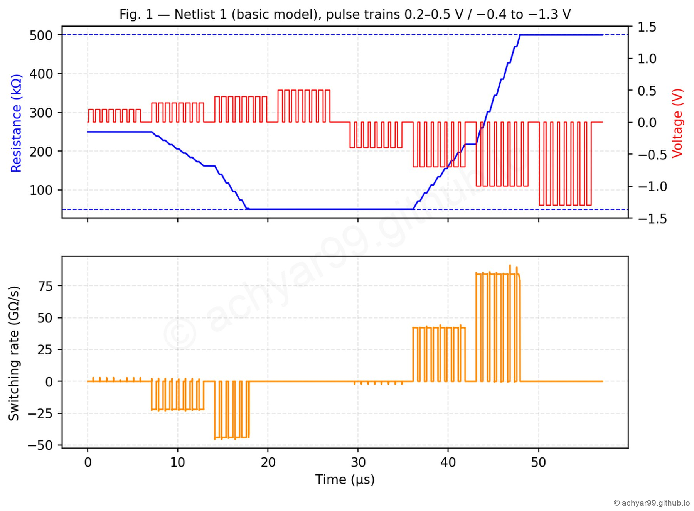
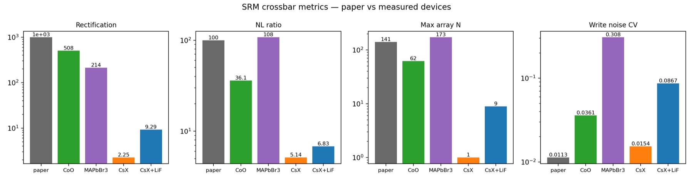
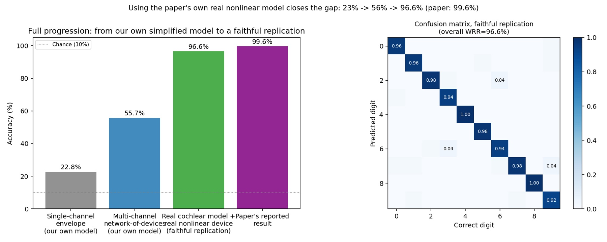
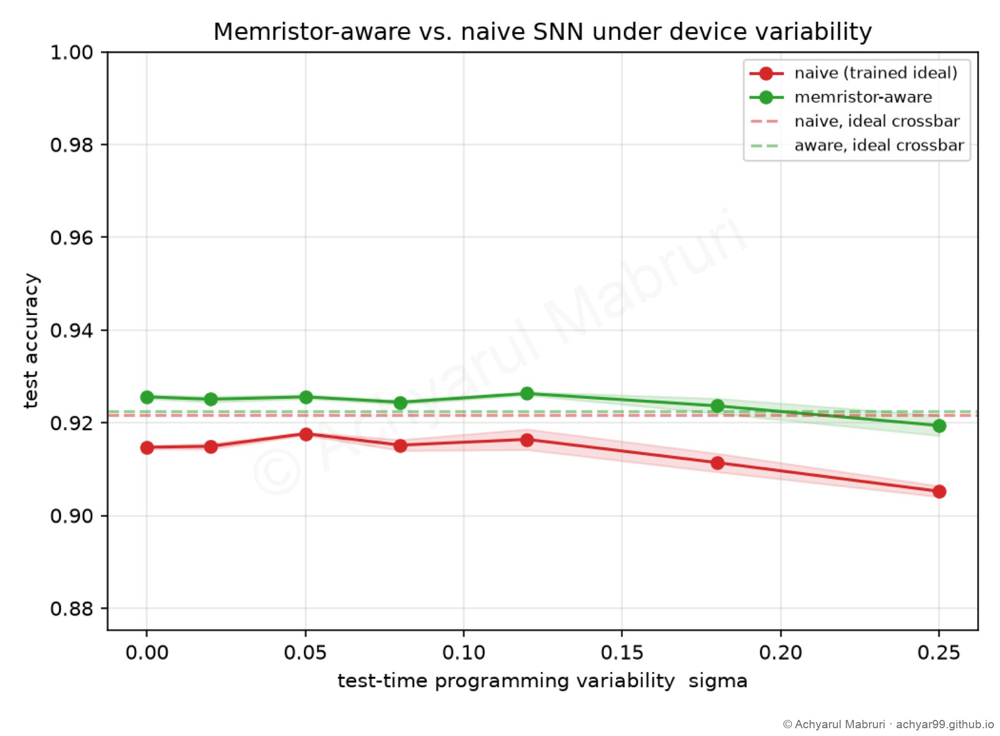
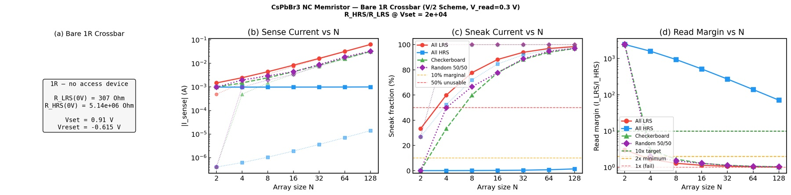
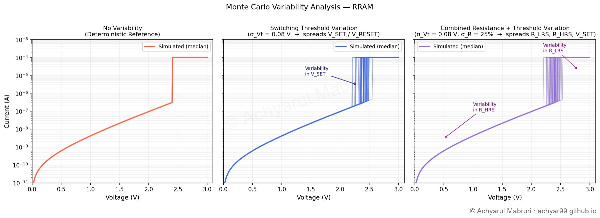
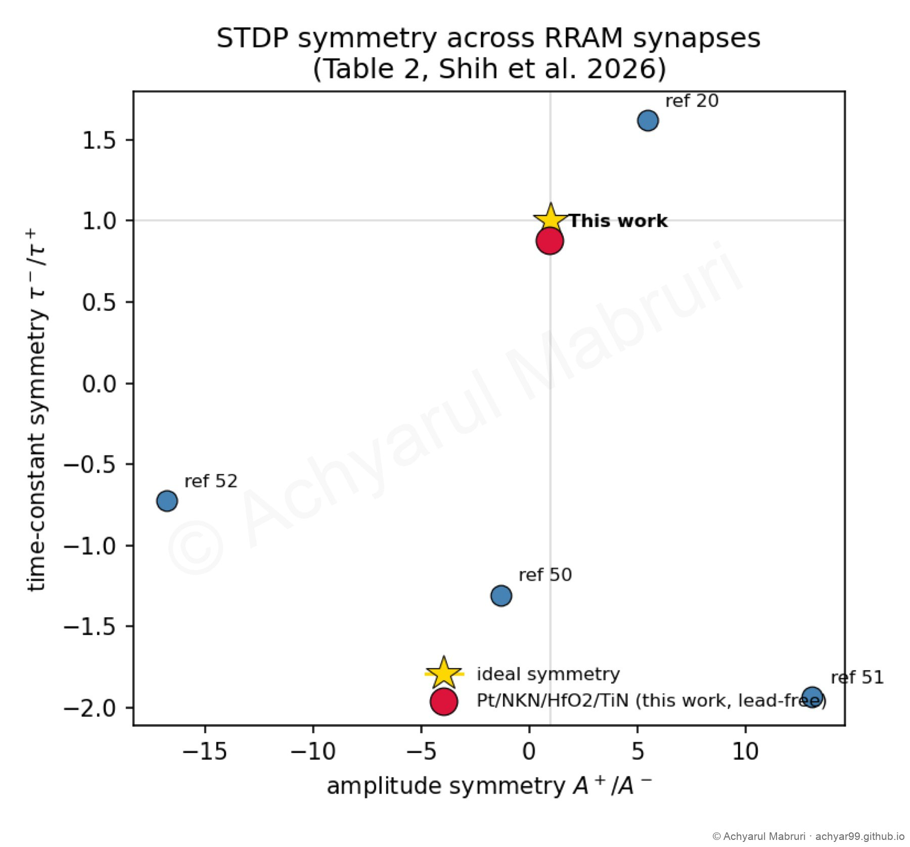

Research projects
From fabricated devices to trained networks. Filter by topic, then open any project to see its scope and progress.
Metal-halide RRAM: from measured device to neural network
Taking lead-free metal-halide RRAM devices from our lab toward crossbar arrays and neural networks.
Phase-change heterostructure memory, from device to chip
A device-to-chip simulation pipeline for published multi-level phase-change heterostructure (PCH) memories.
Keeping phase-change-memory inference accurate for a year
Conductance drift slowly erases the weights stored in phase-change memory. I tested how to keep a network accurate for a year.
From equation to accuracy: auditing compact memristor models
Compact memristor models are usually copied from existing code. I checked them against their original papers and measured what the errors do to training.
NEUROM: a reservoir-computing benchmark across six memristor models
A reproducible benchmark linking memristor device physics to reservoir-computing performance.
A spiking neural network on three real devices
Training a brain-inspired spiking network, then forcing its weights onto the measured conductance levels of real devices.
Learning pulse by pulse on the device
What happens when the chip has to learn by itself, one programming pulse at a time.
Physical reservoir computing with Ag/MoS₂/Au CBRAM
Can a discrete, multi-threshold switching device work as a reservoir node? A SPICE-level answer.
A machine-learning surrogate for STDP synapses
Replacing slow circuit simulations with a fast machine-learning model to explore synapse designs.

SPICE behavioural models of memristors: reproducing Vourkas (2025)
Reproducing all five LTspice behavioural-model netlists from a 2025 guide to modelling non-ideal and dynamic memristor switching, then extending them to circuits and crossbars.

Self-rectifying memristors for selector-free crossbar arrays
Replicating the simulation modules of a 2026 Advanced Materials paper, then turning them into an engine that evaluates any measured device.

Spoken-digit recognition with a TaOₓ dynamic-memristor reservoir
Rebuilding a dynamic-memristor reservoir for spoken-digit recognition, step by step, until it matches the published result.

Rebuilding a reconfigurable ZnPS₃ memristor reservoir for ECG classification
A full rebuild of a 2025 Nature Communications reservoir from the paper's source data, where the original code only prepared the data.

Memristor-aware spiking networks on bismuth-halide perovskite devices
A lead-free perovskite memristor model, and a spiking network trained to tolerate that device's variability.

CsPbBr₃ nanocrystal memristor: compact model to crossbar limits
Turning a published halide-perovskite nanocrystal memristor into an LTspice model and asking how big its arrays can get.
Compact models for conductive-bridge memories
Digitising published conductive-bridge devices and fitting compact models that reproduce their switching.

A generic compact model for HfOₓ RRAM and threshold switches
Python replication of a 2026 Scientific Reports compact circuit model for resistive memories and switches.

Lead-free NKN/HfO₂ synapses with symmetric STDP
Reproducing the spike-timing learning rule of a lead-free perovskite/oxide synapse and testing it in a spiking network.
Temperature-dependent photonic band gaps for sensing
My undergraduate research at Delhi Technological University, published in the Journal of Modern Optics, with a Springer book chapter from AFMD 2025 forthcoming in 2027.
Reproductions and tools
Extended the open-source PyNeuroMemSim simulator, ported Keithley 4200-SCS scripts from C to Python, and reproduced a β-VAE study as a course project.
Let's build something together.
Open to research collaborations, fully funded PhD positions and R&D roles, especially in emerging memory devices, nanoelectronics and neuromorphic hardware, and always happy to support youth leadership, mentoring and soft-skill development.